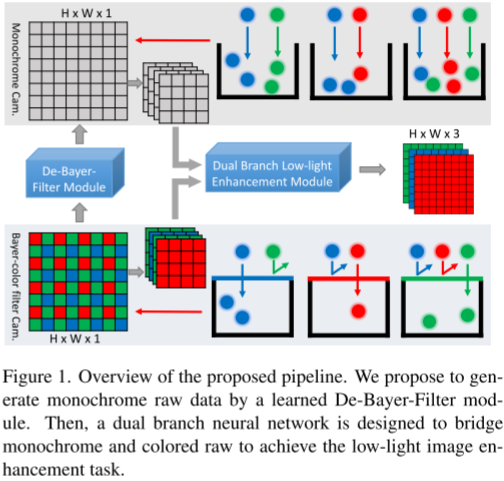
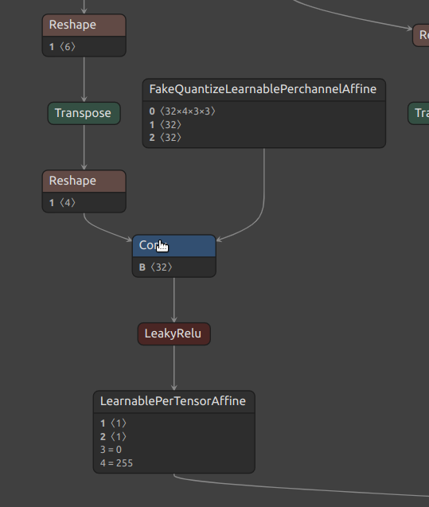

graduate
Abandon_the_Bayer....
暗光处理主要思路
使用两类网络，一类用语将rggb图像变为单一颜色灰度图像，主要是为了统一输入，因为有些输入图像格式为ryyb，这种格式得到的图片质量较高
为了不让原始的彩色信息丢失，这里使用一个channel-wise的层，他可以接收单一颜色的灰度图片，也接受rggb颜色的图片，然后进行处理得到最终的结果 
数据集
sid数据集介绍(https://blog.csdn.net/tywwwww/article/details/131072339)
量化框架书写
- torch.fx使用介绍
- 计算图相关
- torch.nn.qat的作用
- 量化相关
- mqbench相关文档
- 量化框架中层替换分别使用了pytorch中nn.qat库中的一些卷积层，以及mqbench.nn.qat、mqbench.nn.intrinsic.qat ==> 主要为融合relu，batchnormal等层结构
- 相关量化方法，mqbench中已经实现的部分 内部含有相关论文
知识蒸馏
- 同样适用torch.fx框架书写蒸馏部分
- 完成teacher蒸馏框架 特征蒸馏方案
中间层的选择
选择中间层进行知识蒸馏需要考虑几个因素，包括模型的架构、任务的复杂性和计算资源。以下是一些选择中间层的指导原则：
特征的重要性：首先，需要分析模型中不同层的特征表示对于任务的重要性。通常来说，越接近模型输出的层包含的特征更加抽象和高级，而越靠近输入的层包含的特征更加原始和低级。根据任务的需要，选择与任务相关性较高的中间层进行蒸馏。
模型大小和计算资源：蒸馏中间层会增加计算开销，因为要传递更多的特征表示。如果计算资源有限，你可能需要选择较少的中间层进行蒸馏，或者考虑对中间层进行进一步的降维或压缩。
蒸馏目标：确定蒸馏的目标也很重要。如果你的目标是在小型模型中保留大型模型的全部知识，那么选择更多的中间层进行蒸馏可能是有益的。如果只关注某些方面的知识，可以选择与目标知识相关的中间层。
实验和调整：最好的方法是进行一些实验和调整，以确定最佳的中间层选择。可以尝试不同的组合，并使用验证集来评估性能，然后选择性能最好的模型。
总之，选择中间层需要综合考虑任务需求、计算资源和性能指标。根据你的具体情况和目标，可以灵活地调整中间层的选择来进行知识蒸馏。
使用hession矩阵的迹去判断一个层是否需要进行蒸馏
- hession能判断出一个activation的改变是否能对整个网络影响很大，对于影响很大的层我们认为这是关键输出，也就是特征比较强的层.
存在问题
- downshuffle中的输入没有办法量化 
正在做的实验以及相关任务：
-
-
-
-
-
-
-
-
-
- [ ]
-
-
-
Sun Oct 15 17:16:16 HKT 2023
1. 开启两个量化 + 蒸馏的实验 ,
只有最后一层前一层的输出被蒸馏，使用了两个系数，一个是0.1，另一个是0.5（0.1的时间比较早，0.5是后放的）
2.
重新开始实验，发现自己的量化统计方式有些问题，没有加入训练元素（可能实际上也不需要加上训练元素，因为加载的模型早就稳定了）
3.
突然发现模型中量化模型没有加载原始模型，所以效果很差，所以这里开了第三个模型
Mon Oct 16 17:39:48 HKT 2023
- 昨天起的实验没有成功（因为服务器的一些问题导致一直开在数据加载阶段），在这里加入了一些特殊层数量化的方案，将两段网络的输入和输出的都进行高位数的量化，同时将两段网络中结尾上一层的输出作为蒸馏的依据,配置如下，与以往的实验相比，效果已经好起来了。
### Fri Oct 20 09:41:04 HKT 2023
1
2
3
4
5
6
7
8
9
10
11
12
13
14
15
16
17
18
19
20
21
22
23
24
25
26
27
28
29
30
31
32
33
34
35
36
37
38
39
40
41
42
43
44
45
46
47
48
49
50
51
52
53
54
55
56
57
58
59
60
61
62
63
64
65
66
67
68quant : True
test : False
onnx : False
quant_teacher : True
gpu_id : 3
batch_size : 6
debug : False
pdb_debug : False
load_model : ./onnx/SID_weights_690000.pth
load_quant_model :
load_teacher_model : ./onnx/SID_weights_690000.pth
config_file_path : ./configfile/aba_config.yaml
extra_quantizer_dict:
special_layer:
input_layer : 10
DBF.DBF_conv1.Conv1:
weight : 10 per_channel_affine
activation : 10 per_tensor_affine
DBF.DBF_conv1.lrelu:
weight : 10 per_channel_affine
activation : 10 per_tensor_affine
DBF.DBF_conv1.Conv2:
weight : 10 per_channel_affine
activation : 10 per_tensor_affine
DBF.DBF_conv9.Conv2:
weight : 10 per_channel_affine
activation : 10 per_tensor_affine
DBF.DBF_conv9.lrelu_dup1:
weight : 10 per_channel_affine
activation : 10 per_tensor_affine
DBF.DBF_out:
weight : 10 per_channel_affine
activation : 10 per_tensor_affine
DBLE.color_conv1.Conv1:
weight : 10 per_channel_affine
activation : 10 per_tensor_affine
DBLE.color_conv1.lrelu:
weight : 10 per_channel_affine
activation : 10 per_tensor_affine
DBLE.color_conv1.Conv2:
weight : 10 per_channel_affine
activation : 10 per_tensor_affine
DBLE.mono_conv1.Conv1:
weight : 10 per_channel_affine
activation : 10 per_tensor_affine
DBLE.mono_conv1.lrelu:
weight : 10 per_channel_affine
activation : 10 per_tensor_affine
DBLE.mono_conv1.Conv2:
weight : 10 per_channel_affine
activation : 10 per_tensor_affine
DBLE.dual_conv9.Conv1:
weight : 10 per_channel_affine
activation : 10 per_tensor_affine
DBLE.dual_conv9.lrelu:
weight : 10 per_channel_affine
activation : 10 per_tensor_affine
DBLE.dual_conv9.Conv2:
weight : 10 per_channel_affine
activation : 10 per_tensor_affine
DBLE.dual_conv9.lrelu_dup1:
activation : 10 per_tensor_affine
DBLE.DBLE_out:
weight : 10 per_channel_affine
activation : 10 per_tensor_affine
output_layer_list : ['DBLE.dual_conv9.lrelu_dup1', 'DBF.DBF_conv9.lrelu_dup1']
distill_config : ['DBLE.dual_conv9.lrelu_dup1', 'DBF.DBF_conv9.lrelu_dup1']
distill_coeff : [0.7, 0.7] - 启动了一个没有蒸馏的实验,剩余实验正在修改代码
Wed Oct 24 10:45:48 HKT 2023
启动了一个蒸馏加权系数小一点的网络，发现权重越小效果越好,这会导致开始的情况不是那么坏